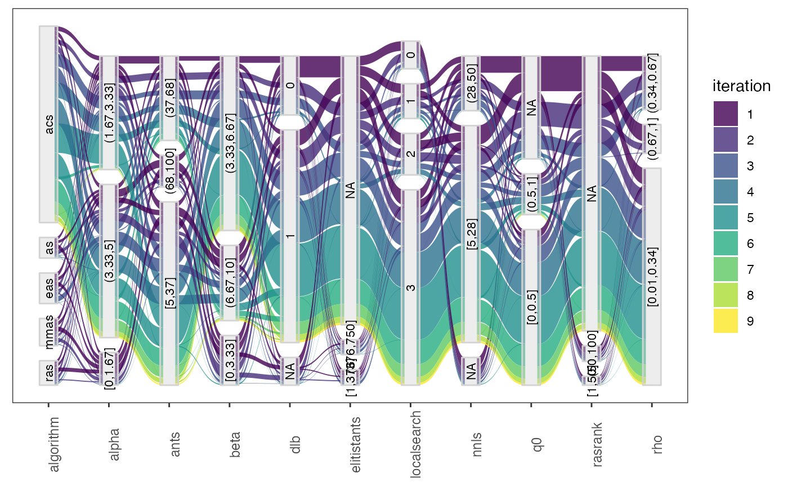
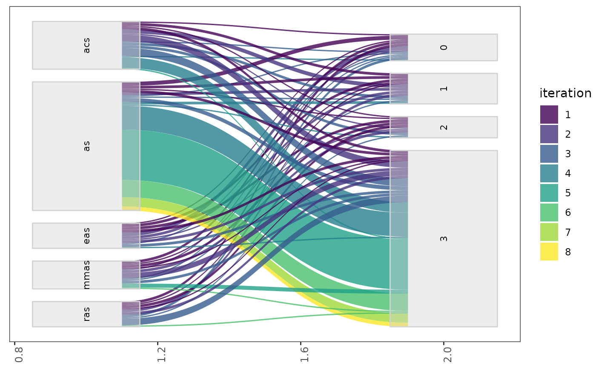
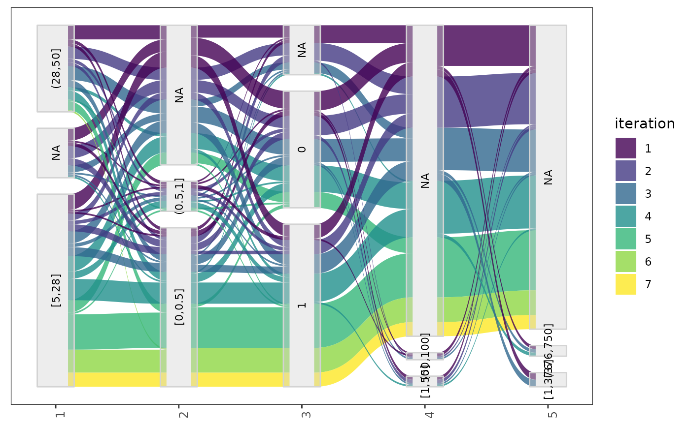
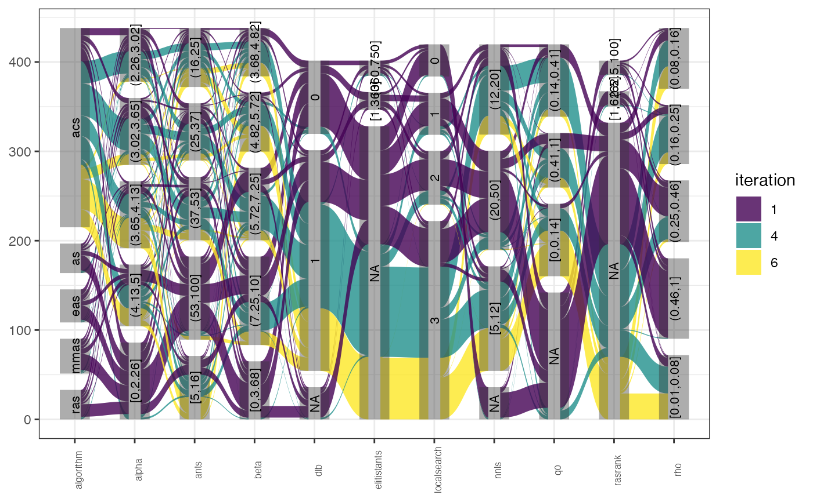
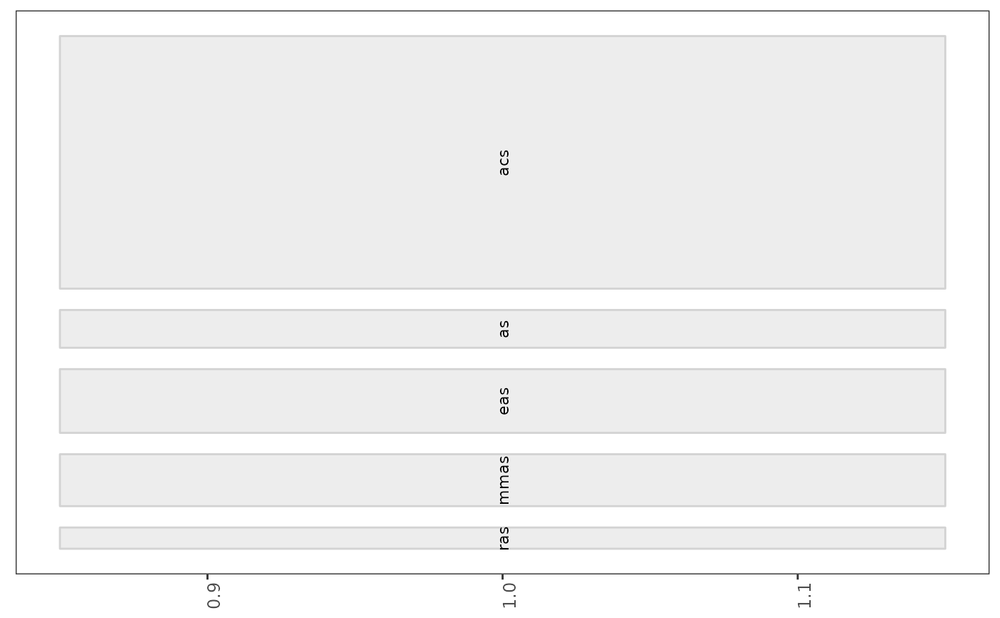
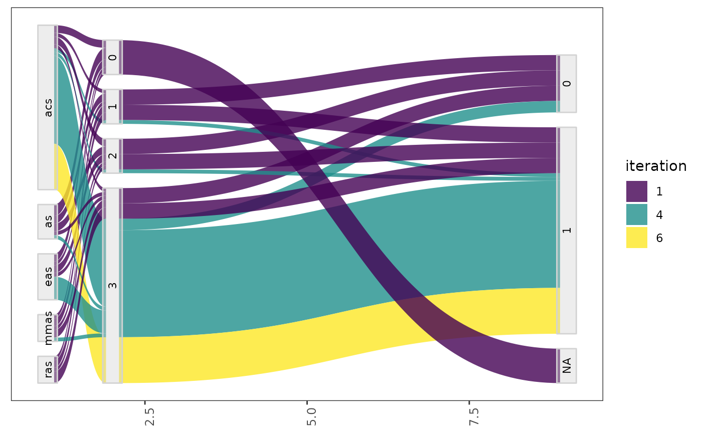

The `parallel_cat` function creates a parallel categories plot of a set of selected configurations. Numerical parameters are discretized to maximum `n_bins` intervals. To visualize configurations of other iterations these must be provided setting the argument iterations, groups of configurations of different iterations are shown in different colors. Specific configurations can be selected providing their ids in the `id_configurations` argument.
The parameters to be included in the plot can be selected with the param_names argument. Additionally, the maximum number of parameters to be displayed in one plot. A list of plots is returned by this function in several plots are required to display the selected data.
parallel_cat(
irace_results,
id_configurations = NULL,
param_names = NULL,
iterations = NULL,
by_n_param = NULL,
n_bins = 3,
filename = NULL
)The data generated when loading the Rdata file created by irace
Numeric vector, configuration ids to be included in the plot (example: `id_configurations = c(20,50,100,300,500,600,700)`)
String vector, parameters to be included in the plot (example: param_names = c("algorithm","alpha","rho","q0","rasrank"))
Numeric vector, iterations from which configuration should be obtained (example: iterations = c(1,4,5))
Numeric (optional), maximum number of parameters to be displayed.
Numeric (default 3), number of intervals to generate for numerical parameters.
(character(1)) File name to save the plot, for example "~/path/example/filename.png".
parallel categories plot
parallel_cat(iraceResults)

# \dontrun{
parallel_cat(iraceResults, by_n_param = 6)
#> [[1]]

#>
#> [[2]]

#>
parallel_cat(iraceResults, id_configurations = c(20, 50, 100, 300, 500, 600, 700))

parallel_cat(iraceResults, param_names = c("algorithm", "alpha", "rho", "q0", "rasrank"))

parallel_cat(iraceResults, iterations = c(1, 4, 6), n_bins=4)

# }